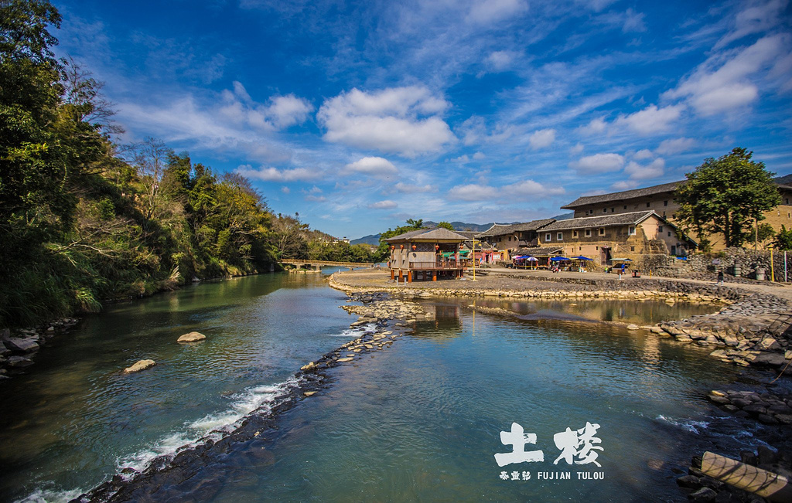
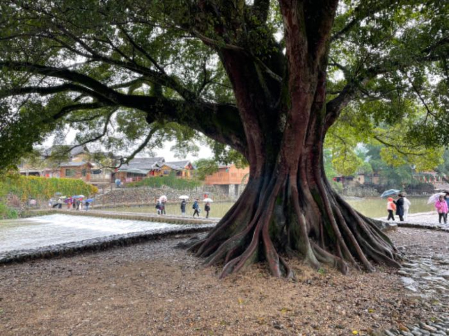
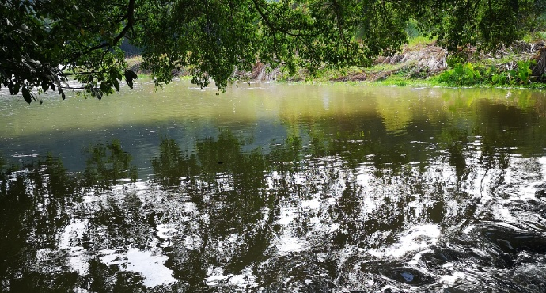
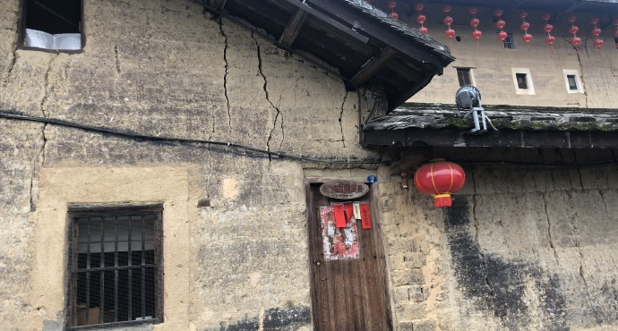
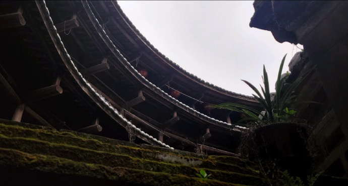

幽长古道、百年老榕、神奇土楼，灵山碧水
热门游记
云水谣-商业化与自然完美结合
云水谣-商业化与自然完美结合，这是一个真实的村落，往里
面走都住着村民。过年年味很浓，从夜景相片的烟花看得出来。结合了土楼，相对其他古
镇多了一种特色！景区百分之95鹅卵石，别穿高跟鞋。交通不那么方便，可能是因为过
年，四点几到南靖站就没公交去。回程时坐上公交，很小很挤，站了一个多小时。总结：
夜景漂亮，跟着几部电影去拍照！摄影爱好者推荐，哈哈哈

云水谣一日团
最后定了云水谣一日团。除了价格贵以外都挺好的。早上8:15
司机师傅联系我们，还不错。除了我们娘俩还有从南京过来的一家三口，一位导游。可以说
一天下来一点都没感到劳累行程很轻松，特别适合亲子游。云水谣跟周庄、乌镇相比要安静
很多，没有那么商业化。特别是我们吃饭前游客很少，吃过饭应该是大团都过来了，显得有
些吵闹了。午饭我们在云水谣拍摄期间陈坤家里吃的，味道还可以。在云水谣有一条贯穿的
小溪，增添了这里的灵气和秀美。小溪边随处可见很多的百年大榕树，“池塘边的榕树上，
知了在声声叫着厦天”。这些大榕树也见证了云水谣的悠悠历史。

追寻电影里的浪漫情节
云水谣因为一个电影而闻名，来这里可以追寻电影里的浪漫情
节，可谓是因为一部剧，捧红了一个地方。进入景区后，基本就进入过了石子路，建议大家最好背包前来，有行李箱又嫌麻烦的，可
以存在景区的行李寄存处。女士也最好不要穿高跟鞋，以免扭伤脚。
小溪里的水特别清澈，遇到天气好的时候，天上一朵朵白云印在溪水里，堪称一幅完美的
画卷。据导游介绍，盗墓笔记就曾在这刻榕树处拍摄。
内部景点

潭头祠
>去看看
1

石园厝
>去看看
2

片仔癀体验馆
>去看看
3
版权所有：漳州旅游网站
关于我们|业务合作|加入我们|"严重违规失信"专项整治举报|安全中心|About Us
作者：游家滨 电话：18960090623 地址：福建省漳州市厦门大学嘉庚学院 邮箱：484891060@qq.com